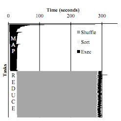
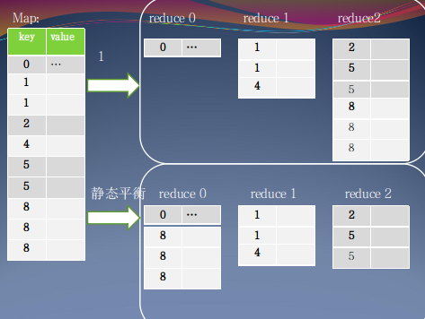
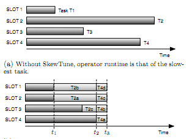

Hadoop MapReduce中的负载均衡问题二 详细分析及现有方案 Analyzing Load Balancing on Hadoop
在上一篇中，简单介绍了负载均衡问题，及其在Hadoop MapReduce平台中的表现。这里详细点，并介绍一些解决方案。
一、倾斜类型
-
数据倾斜
输入数据分布不均，有些节点处理的数据远大于其他节点。可能会出现下面的情况，有个Join操作（reduce端join）输出数据量的大小
-
计算倾斜
运算的复杂度与输入的数据量关系不大，而取决于输入数据的特性。例如，PageRank这样的算法，一个节点的计算复杂度是于这个节点的出度有关，即使分配到一个计算节点上的数据相等，它们的实际运算时间由于度数的差别，还是会出现类似下图这样的情况。

二、解决方案
两种倾斜方式中数据倾斜看起来会比较容易理解些，其实也是较易解决的。而计算倾斜发生得也很频繁，且情况更严重，解决起来也比较麻烦。解决方法整体上有两种分类：静态负载均衡，动态负载均衡。
2.1 静态负载均衡
严格意义上讲，静态负载均衡大多是进行算法优化，改变用户程序，使得整个作业的执行时间尽可能降低。这样的负载均衡一般都是需要对于当前的作业任务、输入数据特征和各个机器节点资源有先验知识。作业开始运行前，哪块数据在哪里进行计算都是可预测的，或者说是确定的，不管运行多少次都是这样一个状态。Hadoop提供的Partition接口就可以看做是一种静态负载均衡。下图展示了一个静态负载均衡的效果。

静态均衡很难用来解决计算倾斜的情形。大量的输入数据，想对每个分块的数据做计算量的估计是一个十分繁复且巨大的工作，而且没有通用性。
2.2 动态负载均衡
Hadoop平台中以Slot作为计算资源的分配单位，map任务和reduce任务都是运行在Slot上。Slot可以理解为单位计算资源，与cpu对应。由于存在数据倾斜或者计算倾斜每个任务的运行时间不同，可能会出现某个Slot已经完成任务空闲了，其他的Slot上还有大量的任务没有完成。显而易见，如果此时能够把其他Slot的任务放到这个Slot上来运行会大大提高系统的资源使用率，同时能够提升任务的处理效率及系统的吞吐量。相比于静态负载均衡，动态的均衡有多个优点。它不需要改变用户自己的应用代码，也不要针对不同的输入数据做算法定制优化，系统能够自动地完成均衡工作。
动态均衡还有个优点，它可以用来解决计算倾斜的问题。动态均衡关注的是Slot的空闲与否，可以在运行时根据当前运行状况做出负载分配决策。
相对而言动态均衡比静态均衡更难实现些，为了实现任务间的数据迁移工作需要增加任务间的数据传输模块及其他辅助功能。
2.3 关键技术
负载均衡过程中涉及到三个基本问题：Which，Where，How。
Which– 目前系统中哪个节点的任务被当做Straggler，谁的任务重，需要被迁移。
Where– 系统中哪个节点任务轻，可以多承担些工作，将重的任务迁移到这里。
How– Straggler节点的任务如何迁移到空闲节点中去，而且保证系统的一致性、正确性。
静态
静态Which：对输入数据进行采样，分析作业，估算每个部分的代价（归约到时间运行值）超出均值的那些块为Straggler。
静态Where：估值低于均值的块为要迁移任务到的空闲点。
静态How：类似背包问题，但分配目标是各个背包的估计代价方差最小。
动态
动态Which：目前系统中出现空Slot时，正在运行的task都可以作为Straggler。从其中挑选一个作为Straggler，如何挑选也是通过代价估计。
动态Where：即当前空闲的Slot，将任务迁移到这个Slot。
动态How： A. 直接法：选择当前系统运行中task剩余时间最长的为Straggler，考虑迁移时间，使Straggler和空闲节点处理迁移任务的时间一致。 B. 迭代法：考虑系统I/O问题，选择当前在同一个机器上的剩余时间最长的task为straggler，切分一半计算量到空闲节点；本地不够分再向其他机器请求切分。

大概就像这样。
三、代价估计模型
上面提到的两种方案都需要有个代价估计，一半都是以计算时间作为标量。我们一般使用代价估计模型将不同的应用及对应的数据来将具体的作业情况做代价估计。
3.1 Map task估计
3.2 Reduce task估计
3.3 具体设计
这个坑挖了好久，已经想不起来该怎么填了。悔不当初。留下以当鞭戒！